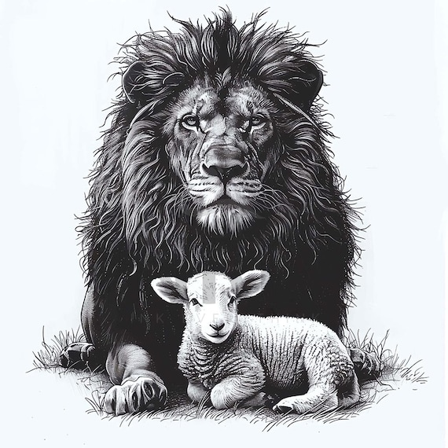

Biblical leadership must hold authority and humility together. When one side is missing, strength becomes control or gentleness becomes passivity.
Authority · Courage · Kingship
Lion
Revelation 5:5
Jesus is the Lion of Judah.
Isaiah 31:4
The Lord is compared to a lion unmoved by opposition.
Revelation 19:15–16
Christ comes in judgment and rule as King of kings.
Humility · Sacrifice · Surrender
Lamb
John 1:29
Jesus is the Lamb of God who takes away sin.
Isaiah 53:7
The suffering servant is led like a lamb.
1 Peter 1:18–19
We are redeemed by the precious blood of Christ, like a spotless lamb.
Main point: Authority without humility becomes control. Humility without authority becomes dormancy. Christ shows both power and surrender in perfect balance.